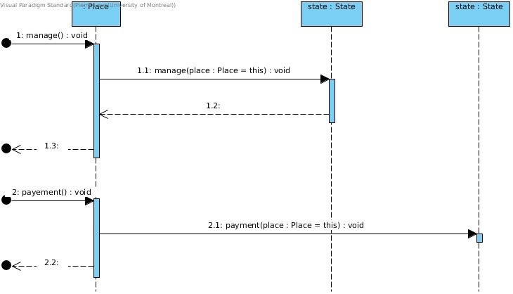

IFT 3911 - Devoir 3
Information générale
Nom: Pierre-Loup Gosse
Matricule: 0944
Courriel: pierre-loup.gosse@umontreal.ca
temps mis: environs 13h
Nom: Louis Grassin
Matricule: 0947
Courriel: louis.grassin@umontreal.ca
temps mis: environs 7h
Nom: Christophe Apollon-Roy
Matricule: 092403
Courriel: christophe.apollon-roy@umontreal.ca
temps mis: environs 7h
Nom: Fahirah Diarra
Matricule: 20034025
Courriel: fahirah-baba-muaka.diarra@umontreal.ca
temps mis: environs 7h
Rapport
Hypothèses
-
Au début du programme, l'utilisateur doit se définir en temps qu'administrateur ou client pour utiliser le système. De cette manière, il est possible
de vérifier directement si les changements on bien été fait.
-
Pour une place réservée, mais non confirmée, l'utilisateur devra annuler sa réservation avant d'en effectuer une autre.
-
Au niveau de l'entrée des dates on suppose que l'utilisateur entre les dates correctement selon le format spécifié à l'écran.
-
Lorsque l'admin créer un voyage, c'est à lui de s'assurer que les destinations correspondent exactement au type de transport.
Par exemple, pour un voyage en avion on doit avoir absolument comme lieu départ et d'arrivée un aéroport. S'il advient que le
lieu de départ et d'arrivé soit une garre ou port pour un voyage en avion, c'est à lui de corriger avec les méthodes de modifications disponibles.
Diagramme de Classe
Étant donné que le digramme est plus compréhensible dans sa totalité nous avons préféré laisser le diagramme de classe tel quel car il regroupe tous les patrons.

- Le paquet "factory" implémente le patron de Fabrique
- La méthode "getInstance()" des fabrique implémente le patron du Singleton
- Le paquet "state" inclus dans le paquet "place" implémente le patron d'État
- Le paquet "ui" regroupe les classes implémentant le modèle MVC (patron de l'Observateur)
- Le paquet "command", interne au paquet "ui", regroupe les classes implémentant le patron de Commande
- Le paquet "visitor" regroupe les classes implémentant le patron du Visiteur pour chaque type d'usager
Diagrammes de séquence ou de collaboration
Nous avons mis à jour nos diagrammes de séquence avec Visual Paradigm, nous affichons ici les diagrammes qui nous semblent pertinent pour les patrons de conception.
Patron Fabrique
Conformément à la spécification de ce patron, les diagrammes montrent qu'une fabrique est appellé et que celle-ci s'occupe entièrement de l'instanciation des Compagnies, Transports, Voyages et Stations.
Compagnie
Transport
Trip
Station
Patron État
Conformément à la spécification de ce patron, les diagrammes montrent que l'état d'un Siège ou d'une Cabine s'assure du bon comportement de celui-ci lors des actions de réservation ou d'annulation (méthode "manage") et de paiement (méthode payment).
Place

Libre

Réservé
Confirmé
Patron Observateur
Nous avons jugé le MVC comme étant la variante du patron d'Observateur la plus adaptée à notre application. Le diagramme qui suit montre comment le Controlleur (Control) met à jour la Vue (View) et le modèle (Database) tout en interagissant avec l'usager (par l'usage de méthodes comme "listen(Menu:menu)").
Patron Commande
Conformément à la spécification de ce patron, le diagramme montre que les commandes de l'admin sont exécutées à l'aide d'un invocateur (CommandController) et que le stockage des Commandes instanciées (classes implémentant Command) dans les listes Undo et Redo permet l'implémentation de l'annulation et la réexécution des commandes de l'admin.
Diagramme de paquets
Grace à ce graphe on peut observer que l'on respecte le Acyclic Dependency Principle (ADP)
Discussion de la qualité de la conception
Lors du travail pratique 2 , nous étions concentré sur l'objectif de création et généralisation du système.Il sagisait d'étendre
le design pour permettre l'ajout d'autres types de compagnie permettant d'autres type de voyage. Il fallait étendre les fonctionnalités
pour chaque type de compagnie. Le priorité était donc de créer un design permettant la création d'un tel système sans considéré les
différents patrons de conception. Il clair que dans certains cas, les patrons de conception pouvaient nous aider à regler des problèmes appliqués
dans certaines situations.Nous avons été en mesure de restructurer et d'améliorer la qualité du design de notre logiciel grâce au patrons de fabrique.
Ceci nous permis d'abstraite la création des objets. Nous avons fait usage d'une data auxquels nous referons pour les données sensibles aux changements.
Par exemple, le prix de réservation pourrait changer au cours de la consultation, ou la disponibilité d'un vol, ou encore d'un siege (patrons de l'observateur).
Comme notre application ce fait en ligne de commande, opter pour un model MVC, Modèle, Vue et Contrôle plus facile à gérer et evidement plus pratique pour la
sépartion des données. Le Modèle notre base de donnée correspondant à la classe "DataBase" , notre vue à la classe "view" et "console" et notre control grace à
la classe admin ControlAdmin , ControlClient et Control.
Implémentation du système en Java
Après le design de classe du diagramme que nous avons pris soins de construire à l'aide des patrons de conception, nous avons généré un diagramme.
notre code est organisé par les différents paquets: company,exception,factory , place reservation , station , transport trip , visitor et ui.
Le paquet compagnie contient une classe abstraite compagnie qui fait abstration de la classe compagnie de la compagnie de crosière "CruiseCompagny",
de la classe compagnie de vol "FlightCompany" et de la classe de Train "TrainCompany".Le Paquet Exception contenant EnumException, ExistException ,
IdException, NbPlaceException, NoCommandException, PrefixException, PriceException, SectionException, StateException, StopException, SystemException et TripException.
Toute ces exceptions sont là pour prévenir et gérer les erreurs dans le système. Le paquets factory contient 3 sous paquet ce chargeant de la création de
company, station ,transport ou de voyage.Le paquets place un paquet contenant "state" contenant les états des places, contient une classe abstraite "place" pour les
types de place.Les places sont cabine "cabin" et siege "seat". Le paquet réservation contient une classe Confirmation et Reservation.Un paquet station possèdant
une classe abstaite station pour les classes Aérport , Port , Ligne de Train "Railway". Ensuite le paquet le transport qui contient la classe bateau "Boat" , Avion "Plante" ,
Train qui prenent abstration de la classe Transport.Elle contient aussi les different type de section. Après le paquet Trip contient toute les types de Croisière, le vol et
la ligne dont la classe trip fait abstraction. Le paquet UI contient tout ce qui communique avec la vue cest à dire la console,les différents controlleur la base de donnée, er
la vue. Il aussi 2 sous-paquet ce changeant du menu, des commandes. Finalement , on a le paquet visiteur "visitor" possèant une interface visiteur implémenter par l'admin et
le client permettant de l'afficher les données que consulte l'utilisateur.
Modélisation du tunnel en réseau de Pétri
Réseau de Pétri
Tel que montré dans le diagramme, les places p4 et p5 font office de feux de circulation et inhibent les transitions t3 et t4 afin de garantir un accès équitable au tunnel. La place p3 représente l'intérieur du tunnel et inhibe les transitions t3 et t4 afin de restreindre le nombre de voitures dans le tunnel à 1. Les transitions t1 et t2 permettent à d'autres voitures d'entrer dans le système, respectant ainsi la contrainte d'avoir un flux constant d'automobiles. Nous considérons qu'une fois sortie du tunnel, une voiture n'est plus dans le système, d'où l'usage de transitions au lieu de places pour les sorties.
Graphe d'accèssibilité
Si nous faisons une loi de conservation en utilisant le vecteur de pondération décrit par le diagramme (0, 0, 1, 0, 0), le produit scalaire entre le vecteur de pondération et un état quelconque donne soit 0 ou 1 pour tous les états du graphe. Cela nous montre que p3 (l'intérieur du tunnel) est bornée-k, où k = 1, et donc que p3 est sécuritaire.
On peut en conclure qu'il ne peut y avoir plus d'un jeton (voiture) à la place p3, peu importe l'état du système, ce qui prouve que la contrainte "seule 1 voiture peut être à l'intérieur du tunnel à la fois" est respectée.
Arbre de couverture
Un examen de l'arbre de couverture nous montre que lorsque le nombre de voitures à chaque entrée du tunnel (p1, p2) atteint ω, le système entre dans un cycle entre les états (ω, ω, 0, 1, 0) -tunnel vide, feu rouge Rive-Sud-, (ω, ω, 1, 1, 0) -voiture de Mtl dans le tunnel-, (ω, ω, 0, 0, 1) -tunnel vide, feu rouge Mtl- et (ω, ω, 1, 0 1) -voiture de la Rive-Sud dans le tunnel-. Ainsi, l'usage du tunnel alterne entre la voie Mtl->Rive-Sud et la voie Rive-Sud->Mtl, montrant un usage équitable du tunnel par les deux voies.
On peut en conclure que la contrainte "faire passer une voiture à la fois de chaque côté de manière équitable" est respectée et qu'il n'y a pas de famine dans le système car chaque "processus" (Mtl->Rive-Sud, Rive-Sud->Mtl) a accès au tunnel pendant exactement la moitié du cycle.